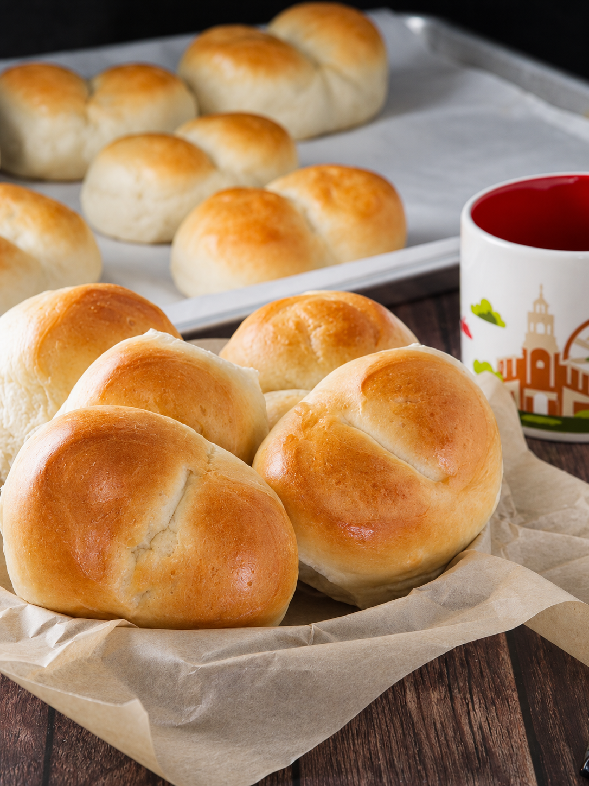

Pan De Regla
A sweet bread originating in the Philippines that features a red filling, which is typically composed of sweetened breadcrumbs.

A popular Filipino bread that is soft and slightly sweet. It is usually eaten with coffee and spreads in the morning.
A sweet bread originating in the Philippines that features a red filling, which is typically composed of sweetened breadcrumbs.
It is made of the best soft and fluffy Filipino bread with sweet and flavorful filling.

▶A traditional Filipino bread known for its dense texture and slightly sweet flavor. It has a brown crust and is often enjoyed with coffee or other hot beverages.
A Filipino bread filled with sweetened shredded coconut. It has a soft texture and a sweet filling that makes it a delicious snack.
A type of sweet cookie that are made with a chocolate-flavored dough. These cookies are easily identified by their distinctive appearance with a cracked top.
A soft and fluffy pastry made with a buttery dough. It is topped with butter, sugar, and cheese, giving it a rich and sweet flavor.
A popular Filipino dessert that has a soft and smooth egg custard filling. The egg pie has a flaky shell and a brown top.
Ube or purple yam is used in making this popular pandesal. This is a recent variant of the regular pandesal of the Filipinos.
A famous Filipino bread that has a distinct star shape. It features a crisp and sugar-coated look with a tender bread that is mildly sweet.